What better way to start the Christmas break then to go for a hike? It was raining in the area we originally wanted to go to, so instead we went up North to Coigach. This peninsula just above Ullapool holds a few hills, among which the highest and most prominent one is Ben Mor Coigach, a steep, narrow and long hill that ends right on the ocean shore.
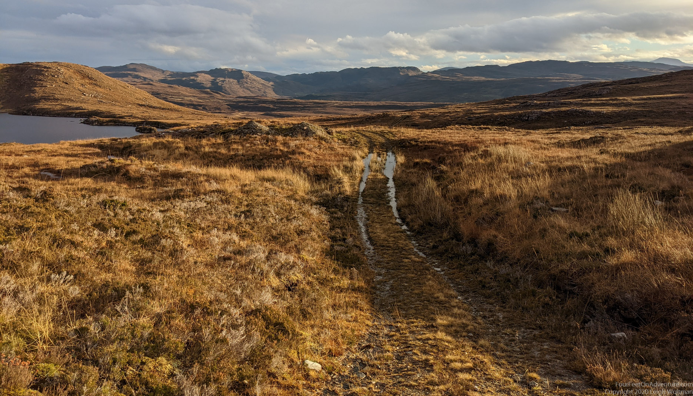
We parked at Bleughasary which meant we had a bit of a track before crossing a river and making our own way up the ridge. It had been raining and snowing previously. The temperature was high enough that we were only in our base layers and the snow had gone. The bog was still soaking wet, which made for slow and wet progress, especially on the way down as we would later experience.
Expectations were met when we got up, the views were stunning. This time of the year the light is amazing anyway, but when we do have a little bit of sun and clear skies to add, the colours are just amazing.
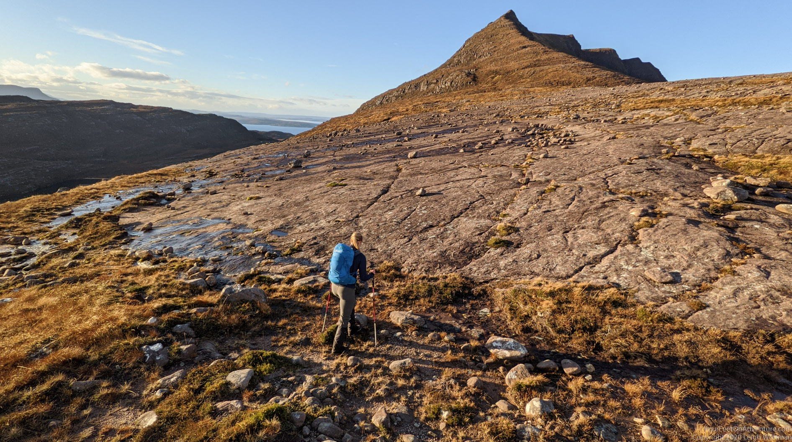
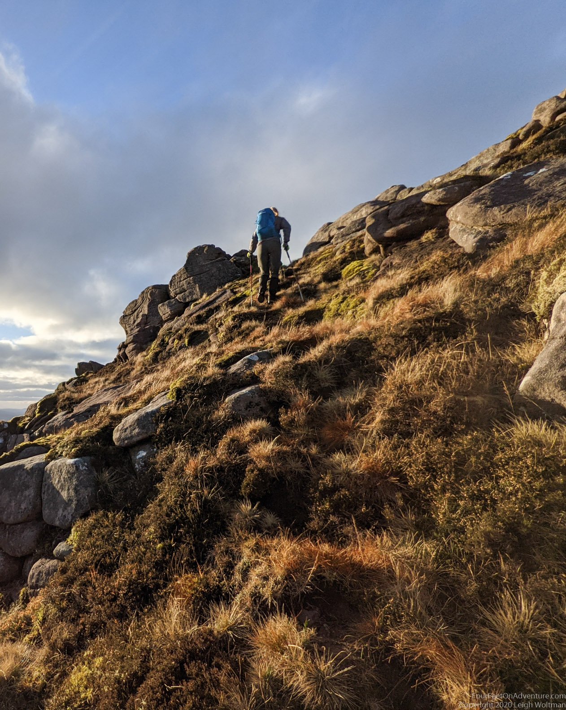
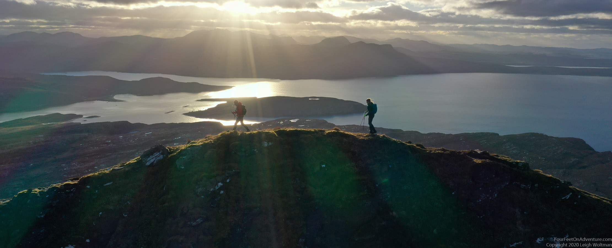
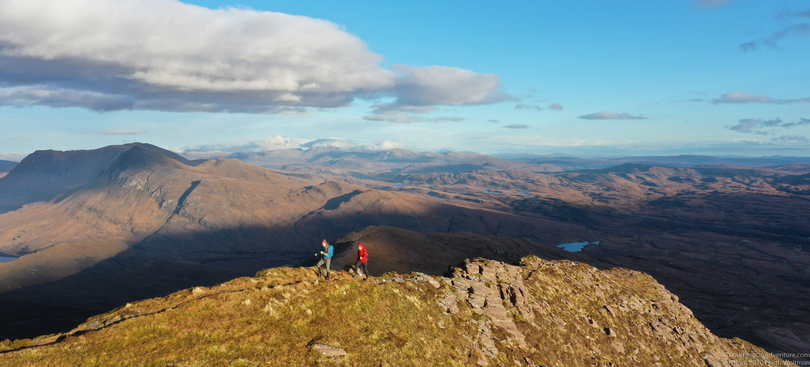
The trail was narrow, a true ridge hike. Not one to do on a windy day. The hills to the north in Assynt, of which most we have already visited, were smiling at us. Perhaps they also enjoy the time of the year when there are fewer hikers and no midges. We walked over the top to the ocean side to have a look at the village there. Before a long windy road was build to it, the only way to it was by boat, or over the trails we had just walked.
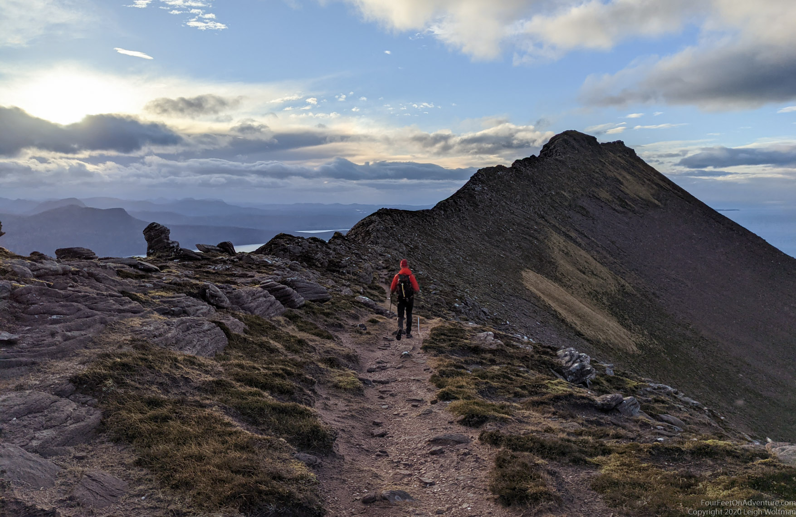
The sun made it down before us, so we had to do the last bit down in the dark. Not that the light would have made it any easier. The wet vegetation made the going slippery, and we were glad to have brought our poles, so we had something to hold on to and probe the depth of whatever was in front of us.
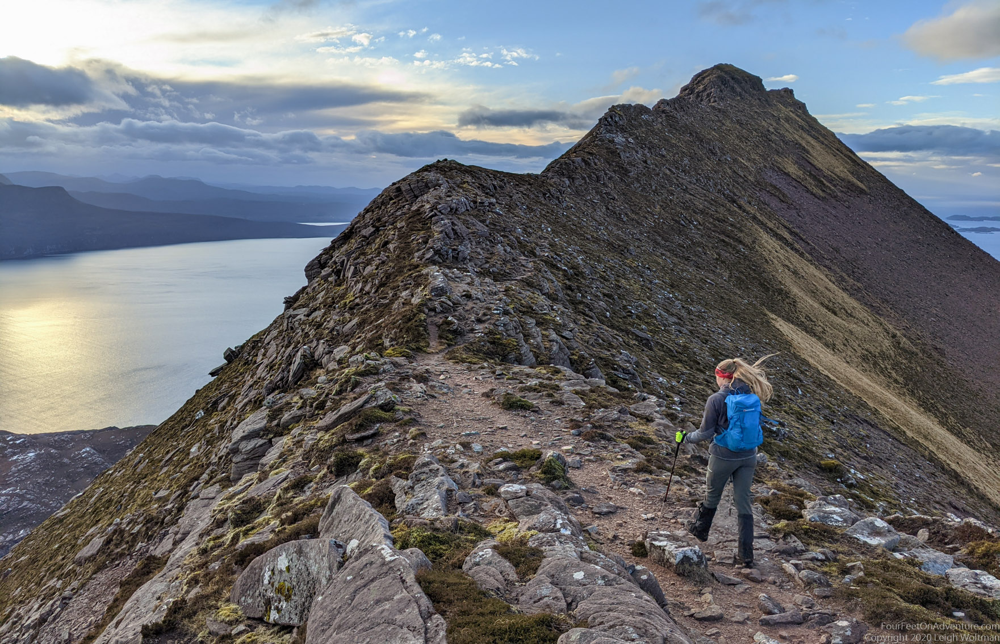
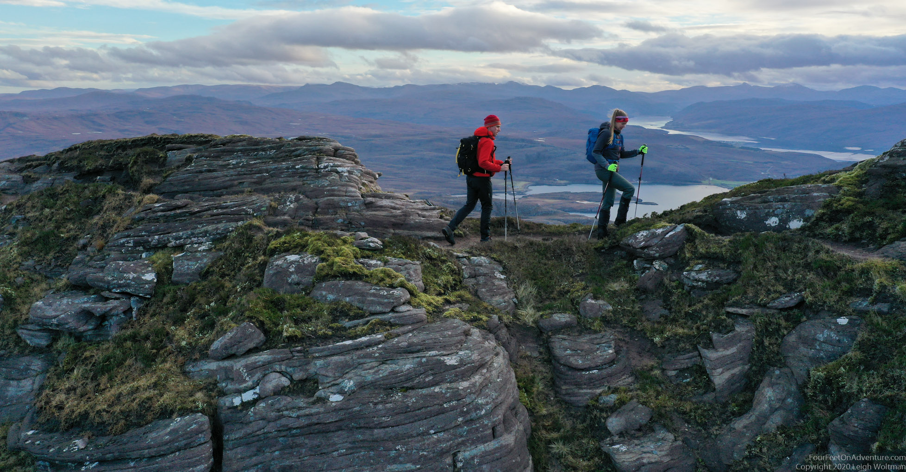
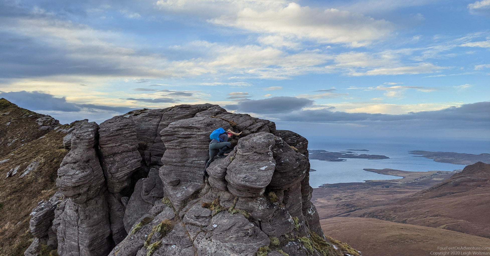
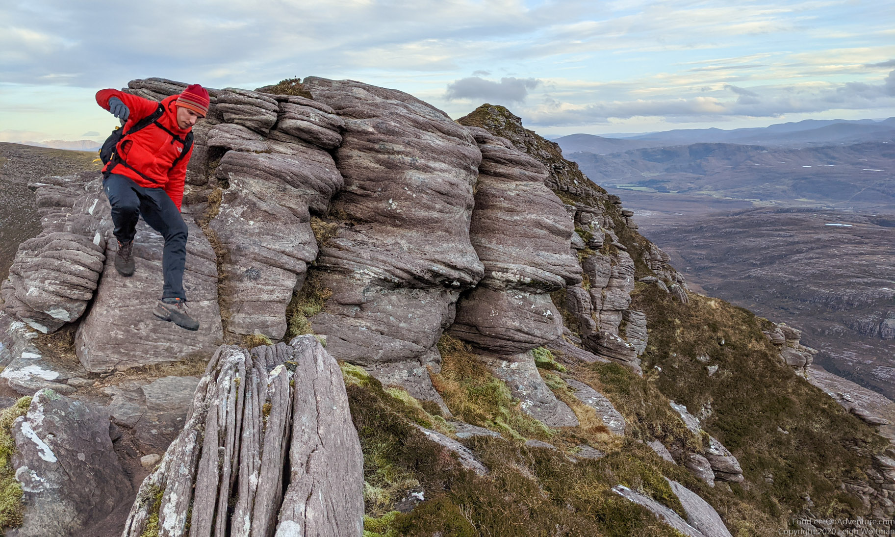
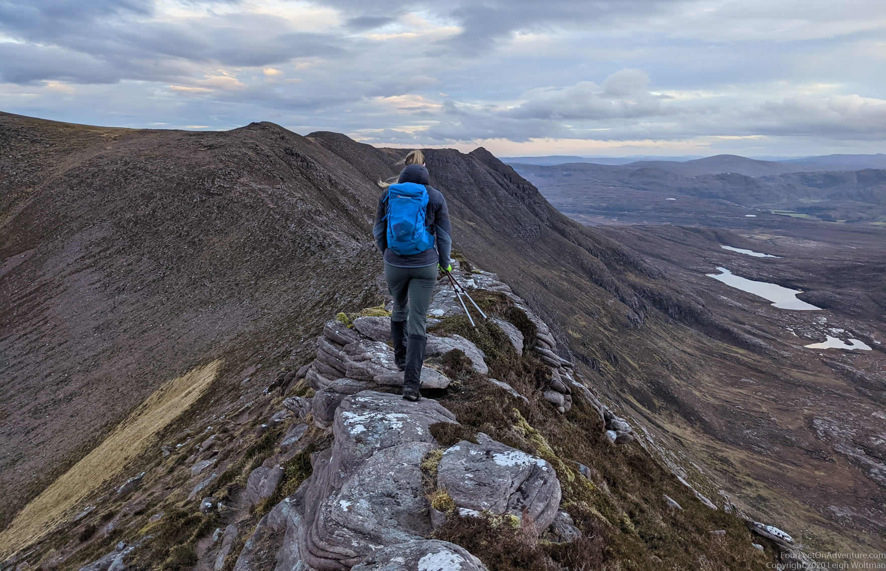
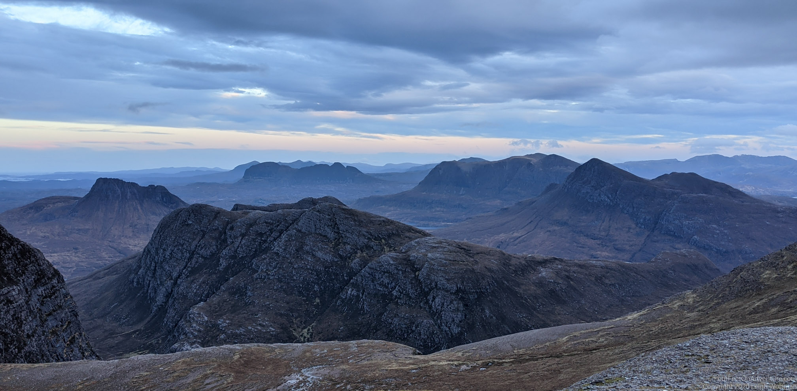
Great day out in a great area! Happy Holidays